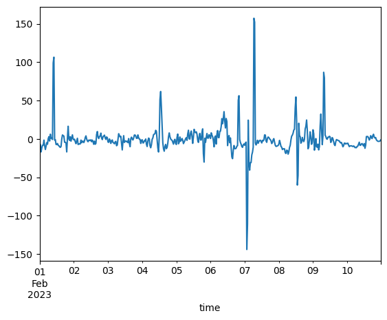
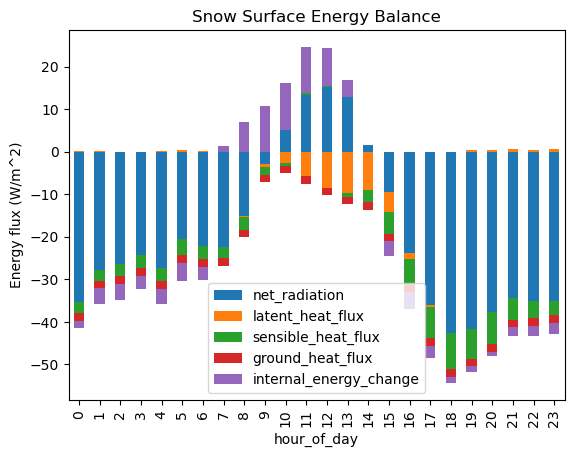
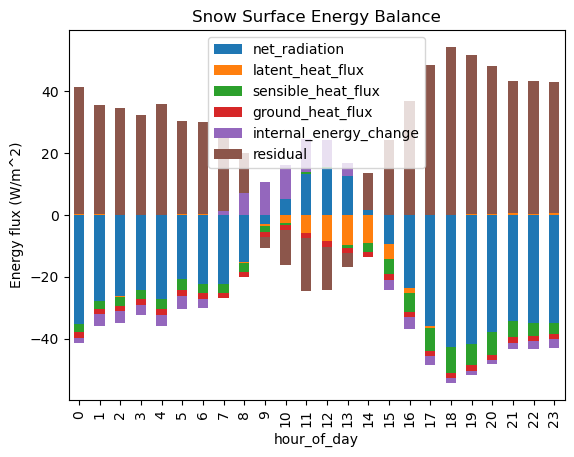

Lab 4-2: Snowpack internal energy - completing the snowpack energy balance#
Written by Daniel Hogan - April, 2023.
Modified by Jessica Lundquist - April, 2023.
Modified by Eli Schwat - January 2024.
import xarray as xr
import numpy as np
import os
import urllib
import pandas as pd
import datetime as dt
import matplotlib.pyplot as plt
SOS Data#
sos_file = "../data/sos_full_dataset_30min.nc"
sos_dataset = xr.open_dataset(sos_file)
Replicate the steps from Lab 4-1 to create a dataset of in-snow temperature measurements (excluding snow surface temperatures)#
tsnow_vars = [v for v in sos_dataset if 'Tsnow_' in v and v.endswith('_d')]
snow_depth_vars = ['SnowDepth_d']
print(snow_depth_vars, tsnow_vars)
['SnowDepth_d'] ['Tsnow_0_4m_d', 'Tsnow_0_5m_d', 'Tsnow_0_6m_d', 'Tsnow_0_7m_d', 'Tsnow_0_8m_d', 'Tsnow_0_9m_d', 'Tsnow_1_0m_d', 'Tsnow_1_1m_d', 'Tsnow_1_2m_d', 'Tsnow_1_3m_d', 'Tsnow_1_4m_d', 'Tsnow_1_5m_d']
# Transform the NetCDF dataset to be a "tidy" dataset of snow depths
snow_temp_dataset = sos_dataset[
tsnow_vars + snow_depth_vars
].to_dataframe().reset_index().set_index(['time', 'SnowDepth_d']).melt(ignore_index=False)
# Calculate the depth of the snow sensor (relative to the snow surface)
# using the snow depth measurements and the known above-ground height
# of the snow sensors
snow_temp_dataset['height_agl'] = snow_temp_dataset['variable'].str[6:9].str.replace('_', '.').astype(float)
snow_temp_dataset = snow_temp_dataset.reset_index().set_index('time')
snow_temp_dataset['depth'] = snow_temp_dataset['height_agl'] - snow_temp_dataset['SnowDepth_d']
# remove measurements NOT in the snowpack
snow_temp_dataset = snow_temp_dataset.query("depth < 0")
snow_temp_dataset
| SnowDepth_d | variable | value | height_agl | depth | |
|---|---|---|---|---|---|
| time | |||||
| 2022-11-28 01:00:00 | 0.423657 | Tsnow_0_4m_d | -9.056437 | 0.4 | -0.023657 |
| 2022-11-28 01:30:00 | 0.461395 | Tsnow_0_4m_d | -10.109233 | 0.4 | -0.061395 |
| 2022-11-28 02:00:00 | 0.499132 | Tsnow_0_4m_d | -9.103524 | 0.4 | -0.099132 |
| 2022-11-28 02:30:00 | 0.536870 | Tsnow_0_4m_d | -10.318118 | 0.4 | -0.136870 |
| 2022-11-28 03:00:00 | 0.574608 | Tsnow_0_4m_d | -11.310650 | 0.4 | -0.174608 |
| ... | ... | ... | ... | ... | ... |
| 2023-04-09 11:00:00 | 1.509988 | Tsnow_1_5m_d | -2.090520 | 1.5 | -0.009988 |
| 2023-04-09 11:30:00 | 1.506667 | Tsnow_1_5m_d | -2.059685 | 1.5 | -0.006667 |
| 2023-04-09 12:00:00 | 1.503345 | Tsnow_1_5m_d | -2.046416 | 1.5 | -0.003345 |
| 2023-04-09 12:30:00 | 1.501286 | Tsnow_1_5m_d | -1.991756 | 1.5 | -0.001286 |
| 2023-04-10 03:00:00 | 1.500064 | Tsnow_1_5m_d | -1.185983 | 1.5 | -0.000064 |
47089 rows × 5 columns
Calculate internal energy of the snowpack#
From Module 4, we can estimate the change in internal energy of the snowpack with the equation
where \(\langle T_s \rangle\) is the depth-averaged snowpack temperature. Let’s calculate this
# Estimate the average snowpack temperature by averaging all in-snow temperatuer measurements for each timestamp
snow_internal_energy_df = snow_temp_dataset.groupby([snow_temp_dataset.index])[['value']].mean().rename(columns={
'value': 'snowpack_temp'
})
snow_internal_energy_df
| snowpack_temp | |
|---|---|
| time | |
| 2022-11-28 01:00:00 | -9.056437 |
| 2022-11-28 01:30:00 | -10.109233 |
| 2022-11-28 02:00:00 | -9.103524 |
| 2022-11-28 02:30:00 | -10.241496 |
| 2022-11-28 03:00:00 | -11.251528 |
| ... | ... |
| 2023-05-09 05:30:00 | NaN |
| 2023-05-09 06:00:00 | NaN |
| 2023-05-09 06:30:00 | NaN |
| 2023-05-09 07:00:00 | NaN |
| 2023-05-09 07:30:00 | NaN |
6817 rows × 1 columns
For now we will estimate the density of snow as constant, let’s say 300 kg/m^3.
Note we also need snow depth. Let’s add that in. We will use snowpdepth measurements from tower D, because that is where we took our snow temperature measurements from.
# add snow depth to our dataset
snow_internal_energy_df = snow_internal_energy_df.join(
sos_dataset['SnowDepth_d'].to_series()
)
snow_internal_energy_df.head()
| snowpack_temp | SnowDepth_d | |
|---|---|---|
| time | ||
| 2022-11-28 01:00:00 | -9.056437 | 0.423657 |
| 2022-11-28 01:30:00 | -10.109233 | 0.461395 |
| 2022-11-28 02:00:00 | -9.103524 | 0.499132 |
| 2022-11-28 02:30:00 | -10.241496 | 0.536870 |
| 2022-11-28 03:00:00 | -11.251528 | 0.574608 |
from metpy.units import units
We assume a constant value of density for the snowpack for this lab
rho_s = 300 * units ("kg/m^3")
c_p_ice = 2090 * units ("J/kg/K") # specific heat capacity of ice
delta_t = 30*60*units("second") # our timestep is 30 minutes
T_snowpack = snow_internal_energy_df['snowpack_temp'].values * units('degC')
Depth_snowpack = snow_internal_energy_df['SnowDepth_d'].values * units('meters')
Calculate the dT/dt
dT_dt = np.gradient(
snow_internal_energy_df['snowpack_temp'],
30*60
) * units('K / second')
Calculate the internal energy change term
dU_dt = rho_s * c_p_ice * Depth_snowpack * dT_dt
snow_internal_energy_df['internal_energy_change'] = dU_dt.magnitude
snow_internal_energy_df['internal_energy_change'].loc['20230201': '20230210'].plot()
<Axes: xlabel='time'>

Calculating a (more) complete snowpack energy balance#
Building on our results from Lab3-2, let’s plot all the components of the snowpack energy balance. Remember in Lab3-2, we calculated the residual and wondered if that residual was equal to the snowpack internal energy change. Now we have an estimate of that term.
Load the saved dataset from Lab3-2. Remove the estimated “residual” as we will recalculate it.
energy_balance_df_diurnal_average = pd.read_pickle("../module3/energy_balance_df_diurnal_average.pkl")
energy_balance_df_diurnal_average = energy_balance_df_diurnal_average.drop(columns='residual')
energy_balance_df_diurnal_average
---------------------------------------------------------------------------
KeyError Traceback (most recent call last)
Cell In[15], line 2
1 energy_balance_df_diurnal_average = pd.read_pickle("../module3/energy_balance_df_diurnal_average.pkl")
----> 2 energy_balance_df_diurnal_average = energy_balance_df_diurnal_average.drop(columns='residual')
3 energy_balance_df_diurnal_average
File /opt/hostedtoolcache/Python/3.11.14/x64/lib/python3.11/site-packages/pandas/core/frame.py:5603, in DataFrame.drop(self, labels, axis, index, columns, level, inplace, errors)
5455 def drop(
5456 self,
5457 labels: IndexLabel | None = None,
(...) 5464 errors: IgnoreRaise = "raise",
5465 ) -> DataFrame | None:
5466 """
5467 Drop specified labels from rows or columns.
5468
(...) 5601 weight 1.0 0.8
5602 """
-> 5603 return super().drop(
5604 labels=labels,
5605 axis=axis,
5606 index=index,
5607 columns=columns,
5608 level=level,
5609 inplace=inplace,
5610 errors=errors,
5611 )
File /opt/hostedtoolcache/Python/3.11.14/x64/lib/python3.11/site-packages/pandas/core/generic.py:4810, in NDFrame.drop(self, labels, axis, index, columns, level, inplace, errors)
4808 for axis, labels in axes.items():
4809 if labels is not None:
-> 4810 obj = obj._drop_axis(labels, axis, level=level, errors=errors)
4812 if inplace:
4813 self._update_inplace(obj)
File /opt/hostedtoolcache/Python/3.11.14/x64/lib/python3.11/site-packages/pandas/core/generic.py:4852, in NDFrame._drop_axis(self, labels, axis, level, errors, only_slice)
4850 new_axis = axis.drop(labels, level=level, errors=errors)
4851 else:
-> 4852 new_axis = axis.drop(labels, errors=errors)
4853 indexer = axis.get_indexer(new_axis)
4855 # Case for non-unique axis
4856 else:
File /opt/hostedtoolcache/Python/3.11.14/x64/lib/python3.11/site-packages/pandas/core/indexes/base.py:7136, in Index.drop(self, labels, errors)
7134 if mask.any():
7135 if errors != "ignore":
-> 7136 raise KeyError(f"{labels[mask].tolist()} not found in axis")
7137 indexer = indexer[~mask]
7138 return self.delete(indexer)
KeyError: "['residual'] not found in axis"
Let’s calculate the “diurnal cycle”/”composite” of the internal energy change term we have estimated in this lab. Remember that in Lab 3-2, we only considered data between Dec–March.
# Create a column representing the hour of the day
snow_internal_energy_df['hour_of_day'] = snow_internal_energy_df.index.hour
# Isolate data to Dec-Mar
# Create a column representing the hour of the day
snow_internal_energy_df = snow_internal_energy_df.loc['20221201': '20230331']
# Isolate the columns we want (i.e. remove snowdepth and snowpack temp)
snow_internal_energy_df = snow_internal_energy_df.drop(columns=['snowpack_temp', 'SnowDepth_d'])
snow_internal_energy_df
| internal_energy_change | hour_of_day | |
|---|---|---|
| time | ||
| 2022-12-01 22:30:00 | 890.630806 | 22 |
| 2022-12-01 23:00:00 | 149.353811 | 23 |
| 2022-12-01 23:30:00 | -23.784119 | 23 |
| 2022-12-02 00:00:00 | -151.119530 | 0 |
| 2022-12-02 00:30:00 | -263.014894 | 0 |
| ... | ... | ... |
| 2023-03-31 21:30:00 | -0.588026 | 21 |
| 2023-03-31 22:00:00 | 2.936079 | 22 |
| 2023-03-31 22:30:00 | 3.402451 | 22 |
| 2023-03-31 23:00:00 | 1.488843 | 23 |
| 2023-03-31 23:30:00 | 0.549330 | 23 |
4933 rows × 2 columns
# Groupby the hour_of_day and take the median (instead of the mean, this will handle any outliers, which appear in the radiation data)
snow_internal_energy_df_diurnal_average = snow_internal_energy_df.groupby('hour_of_day').median()
snow_internal_energy_df_diurnal_average
| internal_energy_change | |
|---|---|
| hour_of_day | |
| 0 | -1.771998 |
| 1 | -3.694650 |
| 2 | -3.647207 |
| 3 | -3.160964 |
| 4 | -3.425118 |
| 5 | -4.232271 |
| 6 | -3.177943 |
| 7 | 1.291401 |
| 8 | 7.005205 |
| 9 | 10.800903 |
| 10 | 11.221932 |
| 11 | 10.752116 |
| 12 | 8.929198 |
| 13 | 4.002527 |
| 14 | 0.065242 |
| 15 | -3.376956 |
| 16 | -3.983711 |
| 17 | -2.968995 |
| 18 | -1.531472 |
| 19 | -1.296901 |
| 20 | -1.123003 |
| 21 | -2.123144 |
| 22 | -2.395217 |
| 23 | -2.711073 |
# Combine the two datasets
energy_balance_df_diurnal_average = energy_balance_df_diurnal_average.join(
snow_internal_energy_df_diurnal_average['internal_energy_change']
)
energy_balance_df_diurnal_average.plot.bar(stacked=True)
plt.title('Snowpack Energy Balance')
plt.ylabel('Energy flux (W/m^2)')
Text(0, 0.5, 'Energy flux (W/m^2)')

Calculate a new estimate of the residual
energy_balance_df_diurnal_average['residual'] = - (
energy_balance_df_diurnal_average['net_radiation']
+ energy_balance_df_diurnal_average['latent_heat_flux'] # we already negated latent heat flux above, so we need to un-negate it here
+ energy_balance_df_diurnal_average['sensible_heat_flux'] # we already negated sensible heat flux above, so we need to un-negate it here
+ energy_balance_df_diurnal_average['ground_heat_flux']
+ energy_balance_df_diurnal_average['internal_energy_change']
)
Did we do the math correctly? We can check by making sure the sum of all the energy balance terms is 0.
energy_balance_df_diurnal_average.sum(axis=1)
hour_of_day
0 0.0
1 0.0
2 0.0
3 0.0
4 0.0
5 0.0
6 0.0
7 0.0
8 0.0
9 0.0
10 0.0
11 0.0
12 0.0
13 0.0
14 0.0
15 0.0
16 0.0
17 0.0
18 0.0
19 0.0
20 0.0
21 0.0
22 0.0
23 0.0
dtype: float64
energy_balance_df_diurnal_average.plot.bar(stacked=True)
plt.title('Snowpack Energy Balance')
plt.ylabel('Energy flux (W/m^2)')
Text(0, 0.5, 'Energy flux (W/m^2)')

How does this compare to our plot from Lab 3-2? Did we remove much of the “residual”?